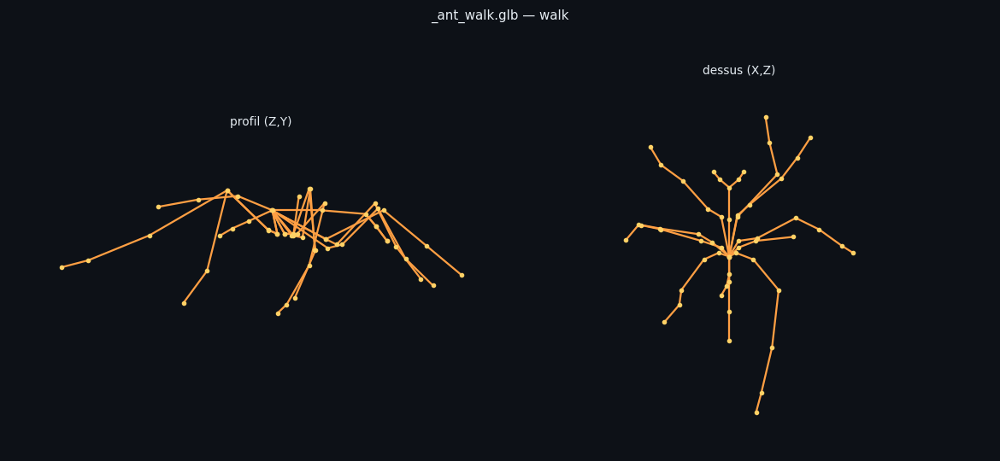
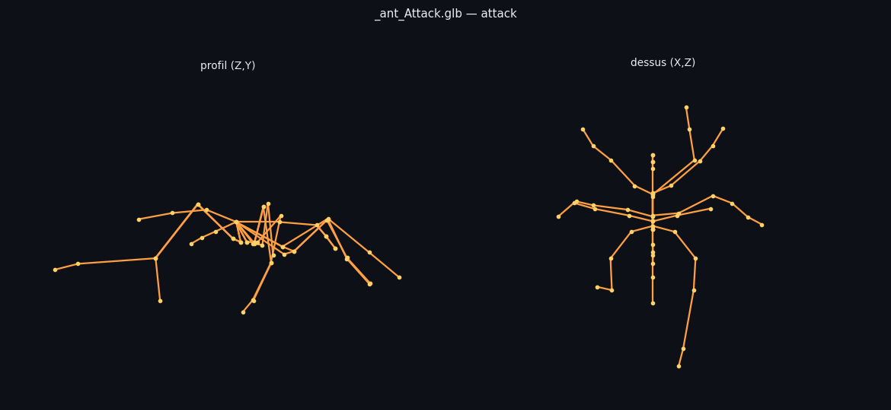
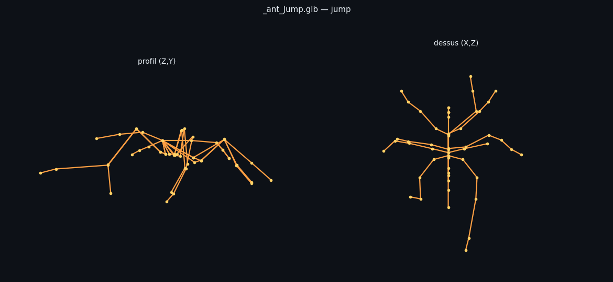
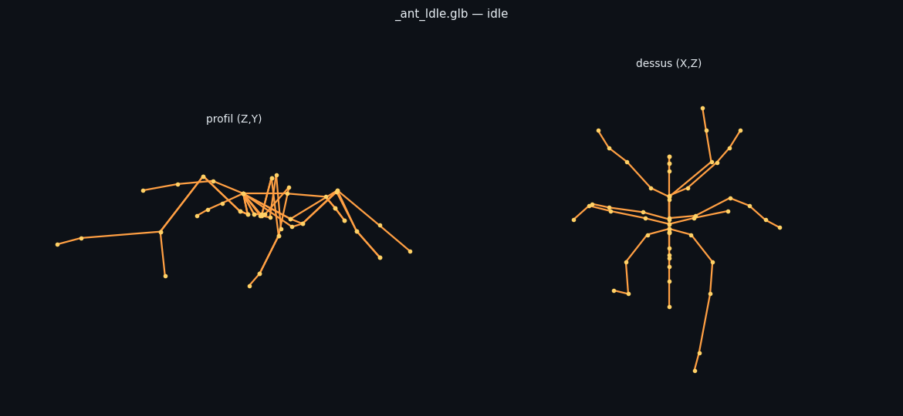
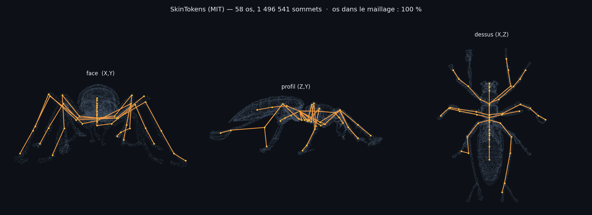

Ton maillage de fourmi, riggé par SkinTokens, animé par des clips d'araignée CC0. Aucun maillon sous licence restrictive, tout tourne en local. Rendu du squelette hors navigateur — vues profil et dessus.

La valeur 0,25 venait du cas dragon (142 os → 47), où le mouvement complet fragmentait le maillage. Sur araignée 56 os → fourmi 58 os, les échelles sont comparables : rien ne justifiait de brider le mouvement aux trois quarts.




La symétrisation atteint son but mesurable, mais n'a rien changé à l'animation (9,9 % → 10,0 %) : ce n'était pas elle le plafond. Il reste par ailleurs un défaut que la géométrie ne peut pas corriger — 19 os à gauche contre 15 à droite, donc des pattes qui n'ont pas le même nombre d'articulations selon le côté.